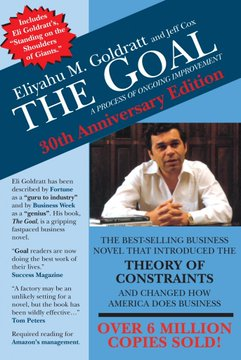
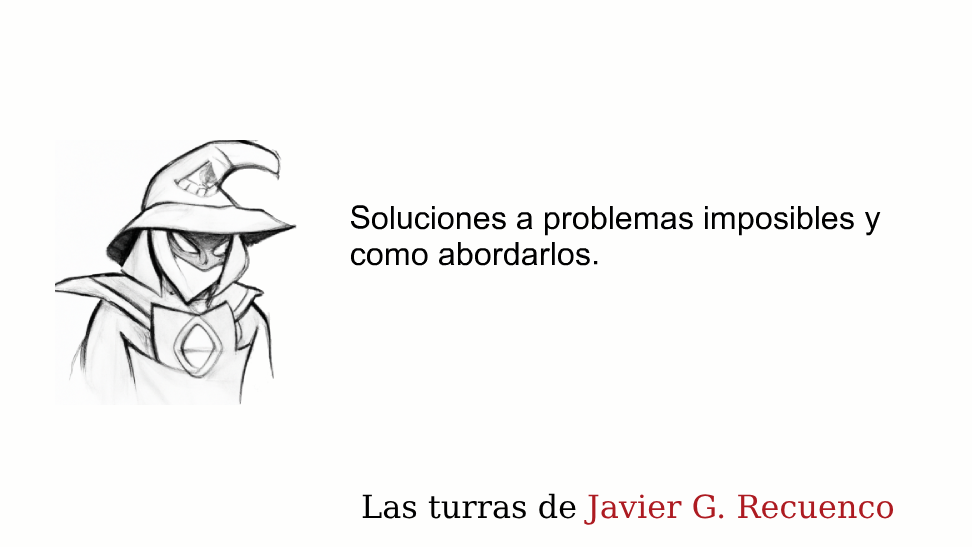
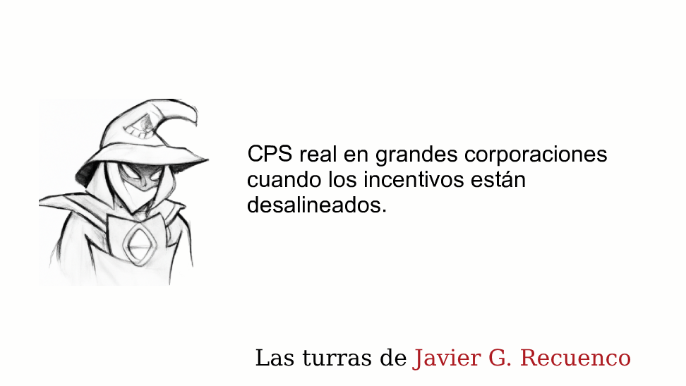
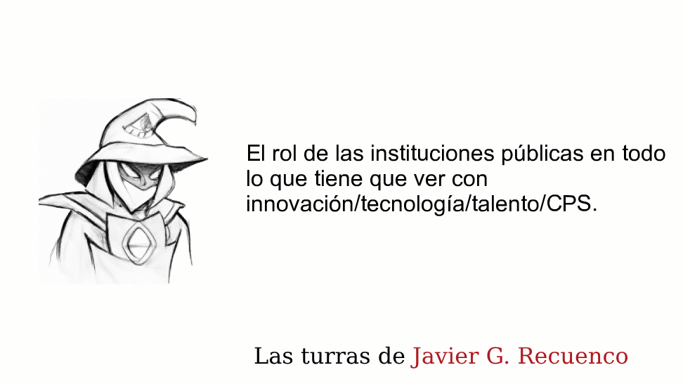
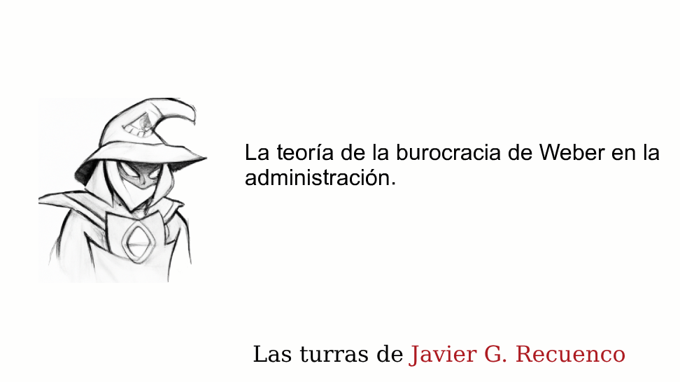
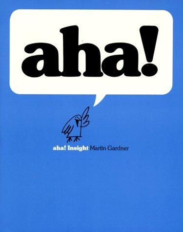

Módulo 01 / Apartado 4 de 5
Qué problemas merecen esto
Porque no todos. Meterse con este aparato en un problema que se arregla con sentido común es una manera cara de perder el tiempo.
Hasta aquí puede parecer que el CPS sirve para todo. Recuenco dice, de hecho, que es una disciplina de uso general y permanente. Pero cuando habla de a quién acepta como cliente su empresa, la cosa se estrecha muchísimo, y ahí está la parte útil.
Son tres condiciones. Si falta una, dice que no.
- A · Acceso a quien decide
- Tienes que poder sentarte con quien manda de verdad. Sin eso, olvídalo.
- B · Aguante para el salto al vacío
- Hace falta gente dispuesta a moverse sin saber cómo acaba la película.
- C · La empresa por encima del ego
- Quien decide tiene que querer más a la empresa que a su propia posición.
A · Por qué hace falta llegar arriba
La respuesta corta: porque este trabajo termina proponiendo cosas que solo puede aprobar alguien con mucho poder. Renunciar a una línea de negocio, cambiar la propuesta de valor, mover a gente de sitio.
La respuesta larga tiene que ver con los incentivos de la gente de en medio. Un mando intermedio que apuesta por algo raro y sale mal, se come el marrón entero. Si sale bien, el mérito se reparte hacia arriba. Con ese reparto, lo racional para él es no meterse en líos, y no porque sea cobarde.
Recuenco lo dice sin adornos: esto es una disciplina de directores generales. Y cuenta que con delegaciones españolas de multinacionales tampoco funciona, porque muchas veces son poco más que oficinas comerciales sin capacidad de tocar nada importante.
B · El salto al vacío, y qué significa de verdad
Aquí la frase que usa como filtro es muy concreta: quien busca un proyecto llave en mano no es su cliente.
Es el encargo cerrado de toda la vida: se define de antemano qué hay que entregar, cuánto cuesta y cuándo estará. El proveedor asume el riesgo de ejecución y el cliente recibe una cosa terminada, como quien encarga una nave industrial.
Funciona perfectamente cuando se sabe qué hay que construir. El problema es que si supieras qué hay que construir, tu problema no sería complejo, y no necesitarías nada de esto.
Si alguien te pide de entrada el entregable, el calendario y el precio cerrado para un problema que nadie ha resuelto antes, esa persona está pidiendo otra cosa. Y hay miles de empresas que se la van a dar mejor que tú.
C · El ego del que paga
El tercer filtro es el más incómodo y el que más explica los fracasos. Formulado como lo formula él: el interés del que decide por su empresa tiene que ser mayor o igual que su interés por sí mismo.
Es un concepto de economía. Aparece siempre que una persona (el agente) toma decisiones en nombre de otra (el principal), y los intereses de los dos no coinciden del todo.
El caso de manual: un directivo cuyo bonus depende del precio de la acción a un año. A la empresa le convendría invertir en algo que dará fruto en cinco. A él le conviene recomprar acciones y subir la cotización ya. Los dos «quieren lo mejor para la empresa», pero no la misma empresa ni el mismo plazo.
No hace falta que nadie sea un sinvergüenza. Basta con que cobren por cosas distintas.
Y de aquí sale el aviso comercial. Cuando este trabajo se hace bien, mueve sillas. No porque quiera echar a nadie, sino porque si una empresa está en problemas suele haber alguien en un puesto clave que no está haciendo su trabajo. Calcula tú las probabilidades de que esa propuesta prospere si quien la tiene que aprobar es precisamente esa persona.
Yokoi sacó la Game Boy en 1989 con pantalla monocroma y sin retroiluminar, mientras Atari y Sega sacaban las suyas en color. Parecía anticuada y arrasó: las rivales aguantaban tres o cuatro horas de pilas y la suya, jornadas enteras, costaba bastante menos y no se rompía. A eso lo llamó «pensamiento lateral con tecnología marchita»: resolver con piezas viejas, baratas y de sobra probadas en lugar de esperar al gran salto técnico. Recuenco lo usa como alternativa al moonshot que depende de un milagro. — El diseñador de la Game Boy
Y si lo pasa, ¿por dónde empiezo?
Supongamos que el problema cumple los tres filtros. Sigues teniendo cuarenta frentes abiertos y la pregunta de siempre: por dónde se empieza. La respuesta más práctica que existe la dio un físico israelí en 1984, y la escribió en forma de novela porque nadie le compraba el manual.

El libro de esto La metaAlex Rogo dirige una fábrica que va mal y le dan tres meses para arreglarla. Aparece un antiguo profesor suyo que en vez de darle respuestas le hace preguntas. Como literatura es flojita; como manual es de lo mejor que hay, porque te obliga a recorrer el razonamiento en lugar de darte la conclusión. — Eliyahu Goldratt, 1984
La tesis: todo sistema que produzca algo tiene una restricción que manda sobre el resultado del conjunto. Una sola, casi siempre. Y todo lo que hagas fuera de ella es tiempo perdido, por muy bien que lo hagas.
Los cinco pasos
Dónde se acumula el trabajo pendiente. Se ve a simple vista si miras dónde hay cola.
Antes de gastar un euro: que no pare nunca, que no procese basura, que no haga cosas que podría hacer otro paso.
El resto trabaja al ritmo de la restricción, aunque eso signifique tener gente y máquinas paradas. Esta es la parte que nadie traga.
Ahora sí: invertir, contratar, comprar capacidad.
Al resolverla, la restricción se muda a otro sitio. Y el aviso: que la inercia no se convierta en la nueva restricción.
El paso tres es el que duele, y conecta directamente con lo que acabamos de ver. Tener recursos parados a propósito choca con cómo se mide a la gente en casi cualquier empresa. Si al responsable del paso A le pagan por producir, va a producir aunque se amontone todo delante de C, y va a tener razón según su hoja de objetivos. No puedes subordinar nada si los incentivos premian lo contrario.
Fuera de una fábrica funciona igual. En un equipo, la restricción suele ser una persona por la que pasa todo. En un proceso comercial, un paso de aprobación. En una administración, una firma. Y la respuesta a por dónde empiezo queda en tres palabras: por donde hay cola.
El límite, y es importante. Esto asume que el sistema tiene un flujo y una meta clara. En un problema donde los actores ni siquiera están de acuerdo en cuál es la meta, no hay una restricción única que encontrar. Goldratt te ordena la parte operativa; no te resuelve el conjunto.
La regla que resume las tres
Hay una frase suya que aparece en varias turras y que vale como resumen del apartado: para poder hacer algo en cualquier sitio tiene que haber alguien al otro lado de la mesa.
El potencial de hacer cosas es algo completamente irrelevante. Y te puede cegar para enterrar mucho tiempo en cosas inviables.
Es un aviso contra una trampa muy común, que él llama la trampa del potencial: engancharte a una empresa o a un proyecto por lo que podría llegar a ser si estuviera bien llevado. Puedes pasarte años ahí sin que se mueva nada, porque no había nadie con ganas reales de moverlo.
Dónde sí funciona
Por no dejar solo la parte negativa. Los sitios donde dice que esto encaja bien:
- Empresas medianas con dueño. El que decide está localizable, se juega su dinero y no tiene que pedir permiso a un comité.
- Startups. La propuesta de valor todavía se puede tocar y no hay veinte años de inercia que desmontar.
- Cualquier sitio donde alguien de arriba ya se ha dado cuenta de que lo de siempre no funciona. Ese es el momento, y no llega cuando a ti te viene bien.
Sobre eso último tiene una observación que conviene digerir: la gente está lista cuando está lista y ni un minuto antes. Cuenta el caso de un contacto que le llamó dos años después de terminar un trabajo para decirle que ya estaba preparado para hacer lo que le habían propuesto entonces.
Lo que hay que llevarse de este apartado
- Tres filtros: acceso a quien decide, aguante para la incertidumbre, y la empresa por delante del ego.
- Un mando intermedio no puede comprar esto, y no es culpa suya sino de cómo le pagan.
- Quien pide un proyecto cerrado no tiene un problema complejo, o no lo quiere tratar como tal.
- El potencial de una organización vale cero si no hay nadie dispuesto a moverse.
Fuentes de este apartado
Las turras de las que sale

Soluciones a problemas imposibles y cómo abordarlos43 tweets · dic 2021De aquí salen los tres filtros de este apartado. Además marca distancias con el moonshot thinking de Diamandis por dos motivos: que dependa de un salto tecnológico, y que ponga a chavales de veinte años como fuerza de choque intelectual cuando aún no se han comido ningún problema de verdad.

CPS en grandes corporaciones con los incentivos desalineados40 tweets · may 2021La turra más pesimista y la más útil para no perder el tiempo. Sostiene que en una multinacional grande es casi imposible hacer esto porque los incentivos están cruzados, y que con mandos intermedios tampoco funciona. Es donde dice que esto es una disciplina de directores generales.

El rol de las instituciones públicas45 tweets · abr 2021Sobre por qué no trabaja con la Administración. Aquí aparece la trampa del potencial: engancharte a una organización por lo que podría llegar a ser si estuviera bien llevada, y enterrar años en algo que nadie tenía intención de mover.

La teoría de la burocracia de Weber41 tweets · may 2021Coge los rasgos que Weber describió de la burocracia —jerarquía, procedimiento, impersonalidad, división máxima del trabajo— y los pone uno a uno frente a lo que pide el CPS. Salen siendo exactamente opuestos, y eso explica el choque mejor que cualquier queja.
Los libros que se citan ahí dentro
La Game Boy salió en 1989 monocroma y sin retroiluminar, contra la Atari Lynx y la Game Gear, que iban en color. Ganó por batería, precio y resistencia: las rivales duraban tres o cuatro horas de pilas. Yokoi llamó a su principio «pensamiento lateral con tecnología marchita», y sostenía que al jugador le da igual la resolución si el juego engancha.
 The Entrepreneurial StateMariana Mazzucato · 2013
The Entrepreneurial StateMariana Mazzucato · 2013Sostiene que las tecnologías que hicieron posible el iPhone —GPS, pantalla táctil, internet, Siri— salieron todas de inversión pública, y que el relato del emprendedor solitario es falso. Recuenco lo lee y lo discute: le compra el análisis y le parece que las soluciones que propone pecan de optimistas sobre cómo funciona la Administración por dentro.
Mission EconomyMariana Mazzucato · 2021La continuación: propone organizar la política económica por misiones, como el programa Apolo, en vez de por sectores. Es el libro que Recuenco cita cuando habla de problemas que solo se pueden abordar con colaboración público-privada, y también cuando dice que la parte de las soluciones es donde ella se despeña.

Aha! InsightMartin Gardner · 1978Una colección de acertijos que no se resuelven calculando más, sino cambiando el punto de vista. Gardner fue durante décadas el divulgador de matemática recreativa de Scientific American. Sale citado en la turra de los problemas imposibles como entrenamiento del salto de perspectiva.
Para ver
Lo enlaza en el hilo sobre la Administración para ilustrar el debate de si se puede transformar una institución desde dentro. Es material de contexto, no una charla suya, y está ahí para que veas el otro lado del argumento.
Faemino y Cansado · «Yo leo a Kierkegaard»Sale citado en la turraUn sketch de Faemino y Cansado que aparece en la turra sin más justificación que hacer gracia en mitad de un hilo denso. Lo dejo porque es exactamente el tipo de digresión que hace que estos hilos se lean, y porque el sketch es buenísimo.